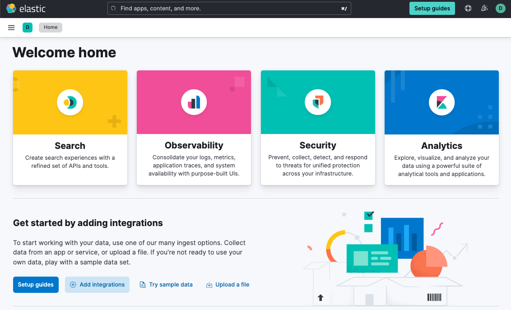
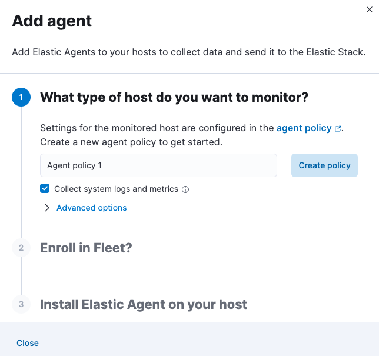
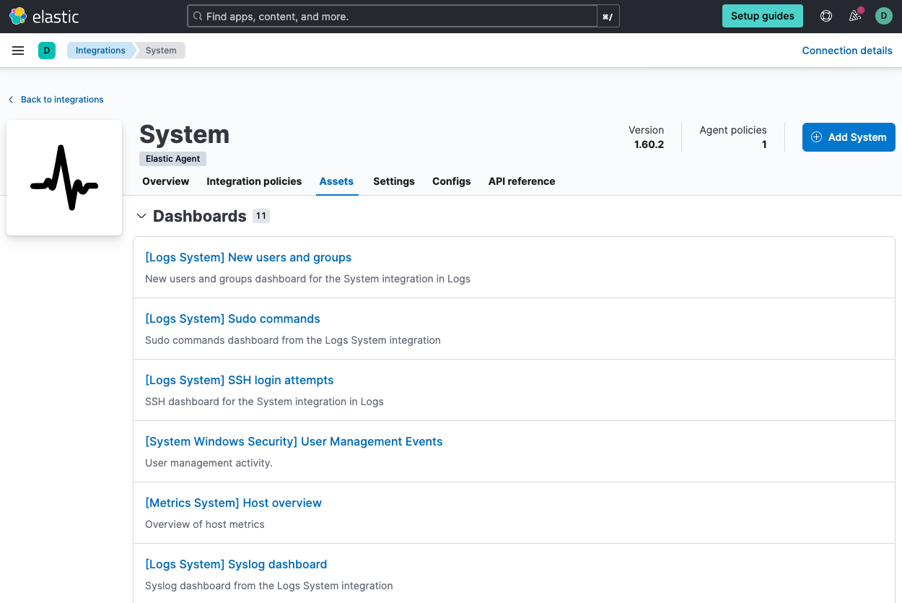

Get started with logs and metricsedit
This guide describes how to:
- Monitor logs and infrastructure metrics from systems and services across your organization
- Monitor Nginx logs and metrics using the Nginx integration
For feedback and questions, please contact us in the discuss forum.
Prerequisitesedit
To follow the steps in this guide, you need an Elastic Stack deployment that includes:
- Elasticsearch for storing and searching data
- Kibana for visualizing and managing data
-
Kibana user with
Allprivileges on Fleet and Integrations. Since many Integrations assets are shared across spaces, users need the Kibana privileges in all spaces. - Integrations Server (included by default in every Elasticsearch Service deployment)
To get started quickly, spin up a deployment of our hosted Elasticsearch Service. The Elasticsearch Service is available on AWS, GCP, and Azure. Try it out for free.
Step 1: Add the Elastic Agent System integrationedit
Elastic Agent is a single, unified way to add monitoring for logs, metrics, and other types of data to a host. It can also protect hosts from security threats, query data from operating systems, forward data from remote services or hardware, and more. A single agent makes it easier and faster to deploy monitoring across your infrastructure. Each agent has a single policy you can update to add integrations for new data sources, security protections, and more.
In this step, add the System integration to monitor host logs and metrics.
-
Go to the Kibana home page and click Add integrations.
 - In the query bar, search for System and select the integration to see more details about it.
- Click Add System.
- Configure the integration name and optionally add a description. Make sure that Collect logs from System instances and Collect metrics from System instances are turned on.
-
Expand each configuration section to verify that the settings are correct for your host. For example, if you’re deploying Elastic Agent on macOS hosts, you need to add a new path to the System syslog logs section by clicking Add row and specifying
/var/log/system.log.
-
Click Save and continue. This step takes a minute or two to complete. When it’s done, you’ll have an agent policy that contains a system integration policy for the configuration you just specified.

-
In the popup, click Add Elastic Agent to your hosts to open the Add agent flyout.
If you accidentally close the popup, go to Fleet > Agents, then click Add agent to access the flyout.
Step 2: Install and run an Elastic Agent on your machineedit
The Add agent flyout has two options: Enroll in Fleet and Run standalone. The default is to enroll the agents in Fleet, as this reduces the amount of work on the person managing the hosts by providing a centralized management tool in Kibana.
-
Skip the Select enrollment token step. The enrollment token you need is already selected.
The enrollment token is specific to the Elastic Agent policy that you just created. When you run the command to enroll the agent in Fleet, you will pass in the enrollment token.
-
Download, install, and enroll the Elastic Agent on your host by selecting your host operating system and following the Install Elastic Agent on your host step.
It takes about a minute for Elastic Agent to enroll in Fleet, download the configuration specified in the policy you just created, and start collecting data.
Step 3: Monitor host logs and metricsedit
-
Verify that data is flowing. Wait until agent enrollment is confirmed and incoming data is received, then click View assets to access dashboards related to the System integration.

-
Choose a dashboard that is related to the operating system of your monitored system. Dashboards are available for Microsoft Windows systems and Unix-like systems (for example, Linux and macOS).
 -
Open the [Metrics System] Host overview dashboard to view performance metrics from your host system.

You can hover over any visualization to adjust its settings, or click the Edit button to make changes to the dashboard. To learn more, refer to Dashboard and visualizations.
Step 4: Monitor Nginx logs and metricsedit
Next, add an Nginx integration to the policy used by your agent.
For these steps, we assume that you have nginx running on your host, and
want to collect logs and metrics from it. If not, you can skip this part of the
guide.
- In Kibana, go to the Integrations page.
- In the query bar, search for Nginx and select the integration to see more details about it.
- Click Add Nginx.
- Configure the integration name and optionally add a description.
- Expand each configuration section to verify that the settings are correct for your host. You may need to change the Paths settings.
- Under Where to add this integration, select Existing hosts, then select the agent policy you created earlier. That way, you can deploy the change to the agent that’s already running.
- When you’re done, click Save and continue, then Save and deploy changes.
-
To see the updated policy, click the agent policy link.
The newly added Nginx integration should appear on the Integrations tab in your agent policy.

Any Elastic Agents assigned to this policy will collect logs and metrics from the Nginx server and the host, along with system logs and uptime data.
- To view the data, go to Management > Fleet, then click the Data streams tab.
- In the Actions column, navigate to the dashboards corresponding to the data stream.
What’s next?edit
- Monitor the status and response times of applications and services in real time using the Uptime app. You can monitor the availability of network endpoints via HTTP, TCP, ICMP or Browser monitors. Get started in Synthetic monitoring.
- Now that data is streaming into the Elastic Stack, take your investigation to a deeper level! Use Elastic Observability to unify your logs, infrastructure metrics, uptime, and application performance data.
- Want to protect your endpoints from security threats? Try Elastic Security. Adding endpoint protection is just another integration that you add to the agent policy!
- Are your eyes bleary from staring at a wall of screens? Create alerts and find out about problems while sipping your favorite beverage poolside.
- Want Elastic to do the heavy lifting? Use machine learning to detect anomalies.
- Got everything working like you want it? Roll out your agent policies to other hosts by deploying Elastic Agents across your infrastructure!